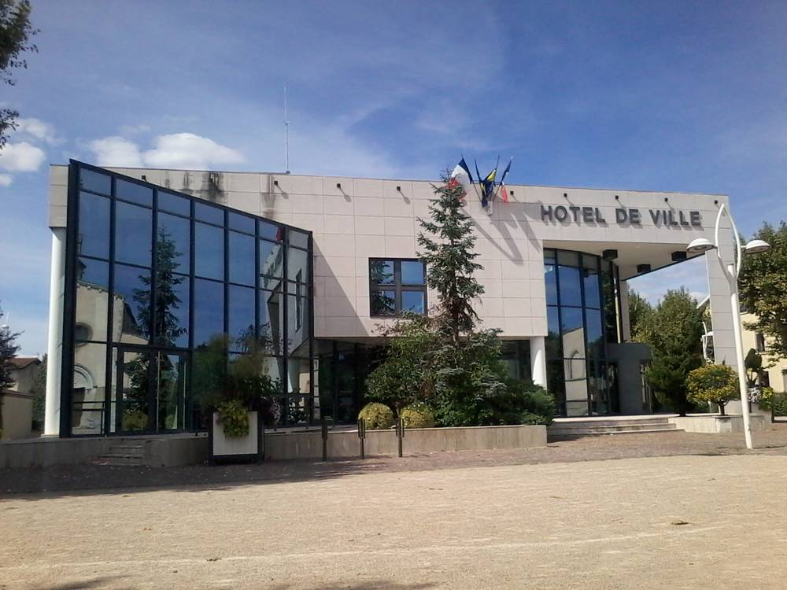

프랑스 퐁테베크, 목재 칩 지역난방 준공…830만 유로 중 시 부담 240만 유로, 사회주택 786가구 난방비 1월부터 15% 내려

인구 6,400명 시가 보조금으로 사업비 73% 채워 열 배관 3.2km 깔아…85km 안 숲의 목재 칩 연료, 시청·학교 등 시 건물 20곳도 연결, 짓고 운영하는 것은 시공사 에네르시옹
프랑스 남동부 이제르주의 인구 6,400명 도시 퐁테베크가 3일 목재 칩 보일러 시설과 열 배관망 '퐁테 샬뢰르(Ponté Chaleur)'를 준공했으며, 이 열을 받는 사회주택 786가구의 난방비는 내년 1월부터 15% 내려간다. 보일러 시설과 왕복 3.2km의 열 배관을 합친 총사업비 830만 유로 가운데 시가 실제로 낸 돈은 240만 유로로 보조율이 73%에 이르며, 도(데파르트망)와 국가 환경에너지청(ADEME), 에너지 절약 인증서 제도가 나머지를 지원했다. 열은 플랑데조르·주네 사회주택 단지와 르솔레유 주거, 그리고 시청과 학교 3곳, 문화센터 등 시 건물 20곳으로 가며, 연료로는 85km 안 숲에서 나온 목재 칩을 써서 가스 난방보다 온실가스 배출을 80% 줄이는 것이 목표다. 시설은 시공사 에네르시옹(Enertion)이 짓고 운영까지 맡았고, 배기가스 이중 필터와 먼지 상시 측정, 2년마다 점검을 갖추고 시설 전기 일부는 태양광 패널로 충당한다. 마르틴 파이타 시장은 비엔 지역 사회주택 회사 아드비보가 786가구를 장기 고객으로 맡아 준 것이 사업을 가능하게 했다며 "우리 규모의 시도 체념을 거부할 수 있음을 증명했다"고 말했고, 2028년에는 시내 주택 87가구로 열 배관망을 넓히는 방안을 검토하고 있다고 밝혔다.
시민에너지 관점
덴마크는 지역난방을 이익을 남기지 않는 원가 공급 원칙으로 운영하게 하고 그 대부분을 열을 쓰는 소비자의 협동조합이나 지자체가 소유하게 해, 연료값이 안정될수록 그 혜택이 고스란히 주민 난방비로 돌아가게 해 왔다. 작은 시가 830만 유로짜리 열 공급망을 감당할 수 있겠느냐는 의문이 따르지만, 퐁테베크는 사회주택이라는 확실한 수요를 묶고 보조금을 모아 시의 부담을 240만 유로로 줄였다. 다만 시설을 시공사가 짓고 운영하는 만큼, 난방비 인하가 오래 이어지려면 요금과 운영 정보를 주민과 시의회가 들여다볼 수 있어야 하고, 길게는 열을 쓰는 주민과 지자체가 주인이 되는 구조로 나아가야 한다. 우리도 에너지 빈곤이 몰린 공공임대주택 단지와 공공건물을 하나의 열 수요로 묶어 지역 자원으로 난방하는 공영 열 공급을 계획하고, 그 소유와 이익이 주민에게 돌아가도록 설계해야 한다.
출처: Vivre villes 2026-11-03 dominique 원문 보기
창간 전 시험 발행 기사입니다.
フランス・ポンテヴェック、木質チップの地域暖房が完成…830万ユーロのうち市の負担は240万ユーロ、社会住宅786戸の暖房費を1月から15%引き下げ
人口6,400人の市が補助金で事業費の73%を賄い熱導管3.2kmを敷設…85km圏内の森の木質チップを燃料に、市庁舎・学校など市の建物20か所にも接続、建設・運営は施工会社エネルシオン
フランス南東部イゼール県の人口6,400人の町ポンテヴェックは3日、木質チップのボイラー施設と熱導管網「ポンテ・シャルール（Ponté Chaleur）」の完成式を開き、この熱を受ける社会住宅786戸の暖房費は来年1月から15%下がる。ボイラー施設と往復3.2kmの熱導管を合わせた総事業費830万ユーロのうち、市が実際に支出したのは240万ユーロで補助率は73%に達し、県と国の環境エネルギー管理庁（ADEME）、省エネ証書制度が残りを支援した。熱はプラン・デ・ゾール、ジュネの社会住宅団地とル・ソレイユ住宅、さらに市庁舎や学校3校、文化センターなど市の建物20か所に送られ、燃料には85km圏内の森から出た木質チップを使い、ガス暖房に比べ温室効果ガス排出を80%減らすことを目標としている。施設は施工会社のエネルシオン（Enertion）が建設から運営まで担い、排気の二重フィルターや粉じんの常時測定、2年ごとの点検を備え、施設の電力の一部は太陽光パネルで賄う。マルティーヌ・ファイタ市長は、ヴィエンヌ地域の社会住宅会社アドヴィヴォが786戸を長期の顧客として引き受けたことが事業を可能にしたとし、「私たちの規模の町でも諦めを拒めることを証明した」と述べ、2028年には市中心部の住宅87戸へ熱導管網を広げる案を検討していると明らかにした。
市民エネルギーの視点
デンマークは地域暖房を利益を残さない原価供給の原則で運営させ、その大半を熱を使う消費者の協同組合や自治体が所有することで、燃料価格が安定するほどその恩恵がそのまま住民の暖房費に返るようにしてきた。小さな町が830万ユーロの熱導管網を担えるのかという疑問はつきまとうが、ポンテヴェックは社会住宅という確かな需要をまとめ、補助金を集めて市の負担を240万ユーロに抑えた。ただ、施設を施工会社が建設・運営する以上、暖房費の引き下げを長く続けるには料金や運営の情報を住民と市議会が確かめられるようにすべきで、長い目で見れば熱を使う住民と自治体が持ち主となる仕組みへ進むべきだ。韓国でもエネルギー貧困が集中する公共賃貸住宅団地と公共建物を一つの熱需要にまとめ、地域の資源で暖める公営の熱供給を計画し、その所有と利益が住民に返るよう設計すべきだ。
出典: Vivre villes 2026-11-03 dominique 原文を読む
創刊前の試験発行記事です。
法国蓬泰韦克木屑区域供热竣工…830万欧元投资中市政府承担240万欧元，786户社会住房取暖费明年1月起下调15%
人口6,400人的小城靠补贴覆盖73%投资，铺设3.2公里热力管道…燃料取自85公里内森林的木屑，市政厅、学校等20座市属建筑也接入，建设和运营由承建商Enertion负责
法国东南部伊泽尔省人口6,400人的小城蓬泰韦克3日为木屑锅炉设施和热力管网"Ponté Chaleur"举行竣工仪式，接入这一热源的786户社会住房的取暖费将从明年1月起下调15%。锅炉设施加上往返3.2公里的热力管道，总投资830万欧元，其中市政府实际出资240万欧元，补贴比例达73%，其余由省政府、国家环境与能源管理署（ADEME）以及节能证书机制提供支持。热力输往Plan des Aures、Genêts两个社会住房小区和Le Soleil住宅，以及市政厅、3所学校、文化中心等20座市属建筑；燃料使用85公里范围内森林产出的木屑，目标是比燃气供暖减少80%的温室气体排放。设施由承建商Enertion建设并负责运营，配备烟气双重过滤、粉尘连续监测和每两年一次的检查，设施部分用电由太阳能板提供。市长玛蒂娜·法伊塔表示，维埃纳地区社会住房公司Advivo把786户作为长期用户纳入，是项目得以实现的关键，她说"我们证明了像我们这样规模的城镇也能拒绝宿命论"，并透露正在研究2028年把管网扩展到市中心87户住宅的方案。
市民能源视角
丹麦要求区域供热按不留利润的成本价原则运营，并让其中大部分由用热消费者的合作社或地方政府拥有，燃料价格越稳定，好处就越完整地回到居民的取暖费上。有人怀疑小城能否承担830万欧元的热网，但蓬泰韦克把社会住房这一稳定需求绑在一起、汇集补贴，把市政府负担压到了240万欧元。不过，既然设施由承建商建设和运营，要让取暖费下调长期持续，居民和市议会就必须能查看收费和运营信息；从长远看，还应走向由用热居民和地方政府当主人的结构。韩国也应把能源贫困集中的公共租赁住房小区和公共建筑合并为一个热需求，规划以本地资源供暖的公营热力供应，并设计让其所有权和收益回到居民手中。
来源: Vivre villes 2026-11-03 dominique 查看原文
本文为创刊前试发行文章。
France's Pont-Évêque opens wood-chip district heating; city pays 2.4 million of 8.3 million euros, heating bills for 786 social homes to fall 15% from January
Town of 6,400 covers 73% of the cost with grants and lays 3.2 km of heat pipes; fuel is wood chips from forests within 85 km, 20 municipal buildings including the town hall and schools are connected, and contractor Enertion built and runs the plant
Pont-Évêque, a town of 6,400 people in France's Isère department, on Nov. 3 inaugurated a wood-chip boiler plant and heat network called Ponté Chaleur, and heating bills for the 786 social housing units it serves will fall by 15% from January. Of the 8.3 million euros spent on the boiler plant and 3.2 km of flow-and-return pipes, the town itself paid 2.4 million euros, a subsidy rate of 73%, with the rest coming from the department, the national environment and energy agency ADEME and energy savings certificates. Heat goes to the Plan des Aures and Genêts social housing estates and the Le Soleil residence, as well as 20 municipal buildings including the town hall, three schools and a cultural centre; the fuel is wood chips from forests within 85 km, and the aim is to cut greenhouse gas emissions by 80% compared with gas heating. The plant was built and is operated by contractor Enertion, has double flue-gas filtration, continuous dust monitoring and audits every two years, and draws part of its own electricity from solar panels. Mayor Martine Faita said the project was made possible by Advivo, the Vienne-area social landlord, signing up the 786 homes as long-term customers, declaring that "we have proved that a town of our size can refuse fatalism," and said an extension to 87 homes in the town centre is being considered for 2028.
Citizen Energy View
Denmark requires district heating to be run on a not-for-profit, cost-based principle and most of it is owned by consumer cooperatives or municipalities, so that when fuel costs are stable the benefit flows straight back into residents' heating bills. There are doubts about whether a small town can carry an 8.3-million-euro heat network, but Pont-Évêque tied in the reliable demand of social housing and pooled grants to bring its own share down to 2.4 million euros. Since a contractor built and runs the plant, though, keeping bills down over time will require residents and the council to be able to see tariffs and operating data, and in the long run the system should move toward ownership by the residents and local government that use the heat. Korea, too, should plan public heat supply that bundles public rental housing estates, where energy poverty is concentrated, with public buildings into a single heat demand served by local resources, and design it so that ownership and benefits return to residents.
Source: Vivre villes 2026-11-03 dominique Read the original
This article was published during the trial period before launch.